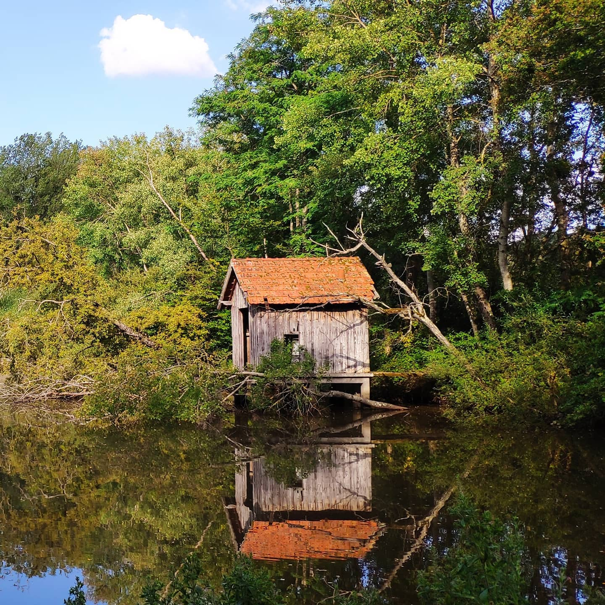
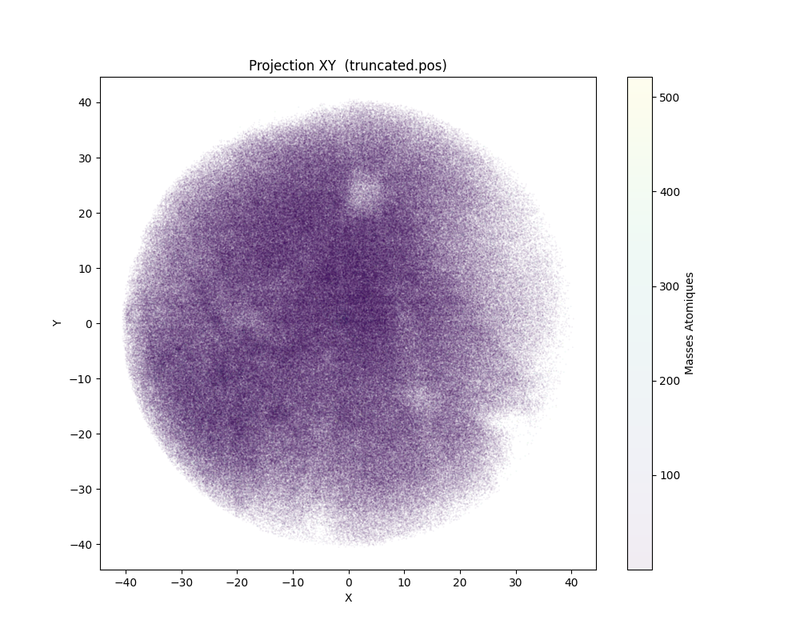

a propos de moi
Étudiant en informatique à l'Université d'Évry en troisième année d'Administration Système et Réseaux.
Diplômes
- BAC Mathématique-Histoire : 2021
- DEUG informatique : 2024
- Secourisme - PSC1
Stages
- Kameleoon : 2018
- Impression : 2019
Mes Compétences
Qualités
- Sérieux
- Rigoureux
- Curieux
- Ponctuel
Compétences
-
Je maîtrise Linux sur plusieurs aspects. Je daily Linux depuis plusieurs années et je suis très confortable avec le terminal et l'usage de Linux dans divers contextes (bureautique, serveur,...). J'ai une expérience avec Arch, OpenSuse, Ubuntu, Debian, Alpine, Fedora, OpenMediaVault, Truenas et Unraid
-
Je sais gérer des utilisateurs, des partages, des droits d'accès, des GPO et plus largement je maîtrise l'usage bureautique de Windows
-
Je sais gérer domaines, des utilisateurs, des droits d'accès, GPO et les délégations de contrôle
- HTML
Je sais créer des pages Web et leur donner un style, je sais utiliser bootstrap. En revanche mes connaissances en Web Dynamique sont plus limitées
-
Je sais créer et administrer des bases de données avec PSQL ainsi qu’interagir et questionner les bases de données. Cependant, je n'ai pas d'expérience quant à l'intégration des bases de données à d'autres applications
-
Je sais produire des documents en LaTeX et j'utilise le MarkDown pour prendre toutes mes notes et faire des rendus basiques
-
Je sais utiliser à un niveau intermédiaire Microsoft Office, bien que je sois plus confortable avec OnlyOffice ou LibreOffice
-
Je sais créer et utiliser des dépôts Git et collaborer avec d'autre personnes sur un même projet
-
Je sais me servir à niveau intermédiaire différent logiciels de la suite Adobe, notamment After Affect, Photoshop, Illustrator et Premiere
-
Je sais me servir à niveau intermédiaire différent logiciels de la suite Adobe, notamment After Affect, Photoshop, Illustrator et Premiere
Mes centres d’Intérêt
Photographie
J'aime photographier la nature et les structures délabrées, je sors souvent le week-end pour faire des photo avec un ami.
Musique
Je ne peux pas me passer de musique, elle m'aide a me concentrer quand je travaille, et j'aime découvrir de nouveaux artistes.
Quelques-un des mes artistes préférés :
- Summoning : black metal sur le thème du seigneur des anneaux
- Joe Hisaishi : compositeur des musique de films, notamment les ghibli de miyazaki
- Anton Bruckner : en particulier sa 4ème symphonie dirigée par Sergiu Celibidache
- Ludwig van beethoven : pour sa 9ème symphonie et sa 13ème sonate
Travail manuel
J'aime faire des choses avec mes mains, j'aime construire et réparer
Quelques-unes de mes activité favorites :
- Menuiserie
- ferronnerie
- mécanique
- horlogerie
Mes Projets
Mes projets universitaire et personnels
Université
Programmation Python
sept 2024 - dec 2024
Tomographie
Programmation d'un outil pour analyser les données produites par une sonde tomographique. Les contraintes du projets était un code contenu dans 300 lignes et un accent sur l'optimisation en raison de la taille des fichier bruts à analyser. Pour ce projet, j'ai utilisé Pandas pour les dataframes et Matplotlib pour le rendu des graphiques.
Exemple d'un nuage de point pour un échantillon d'un million de points. On peut facilement voir les zones les moins denses.
Lien vers le projet